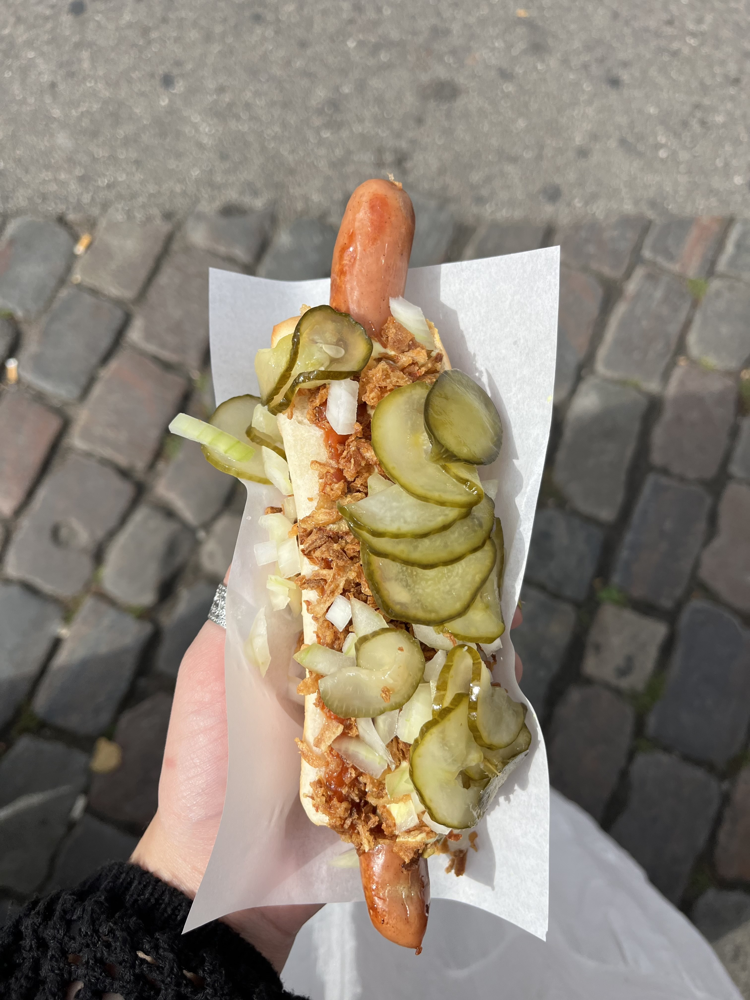
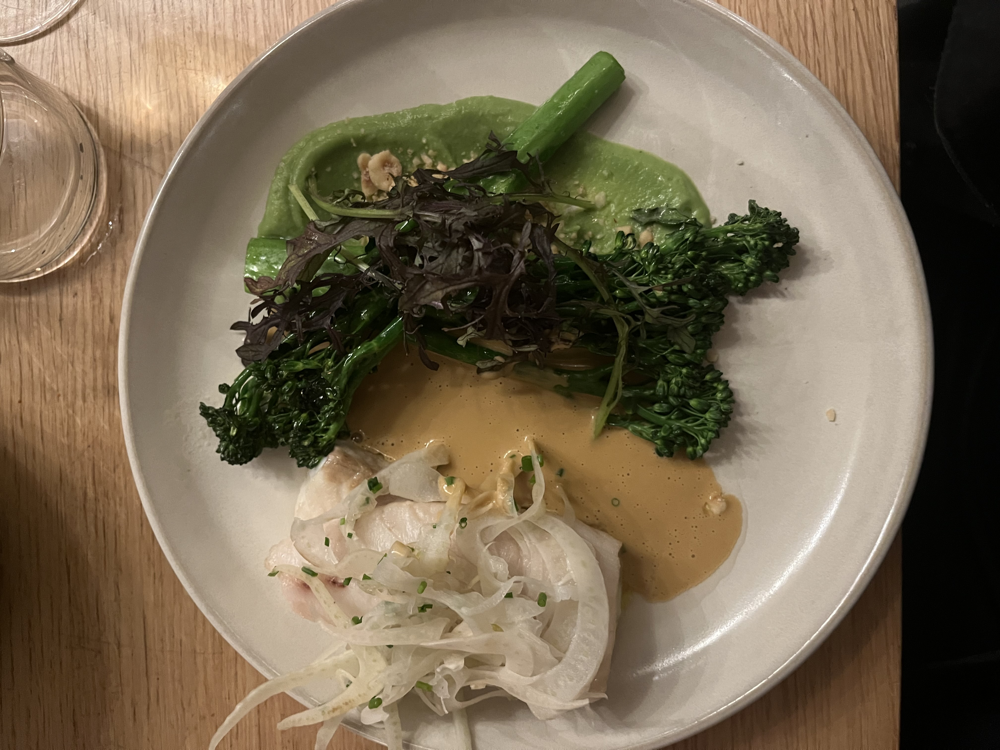
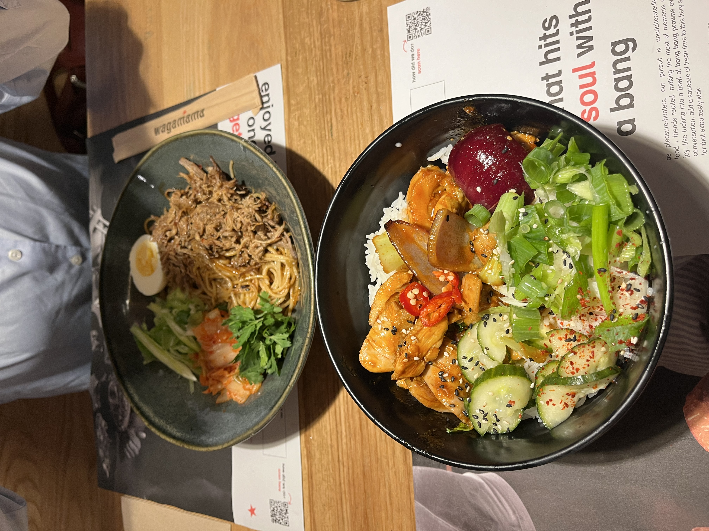
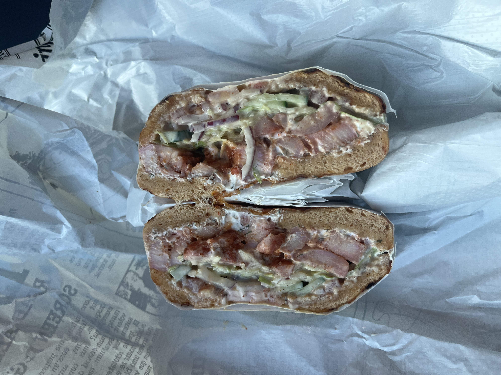
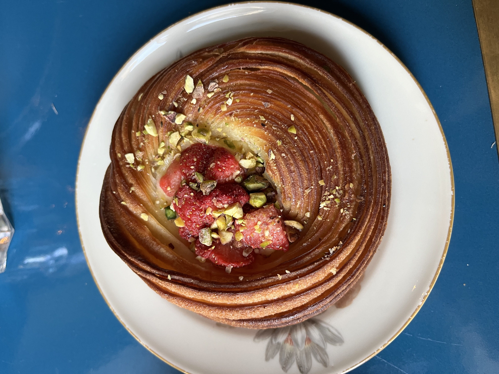
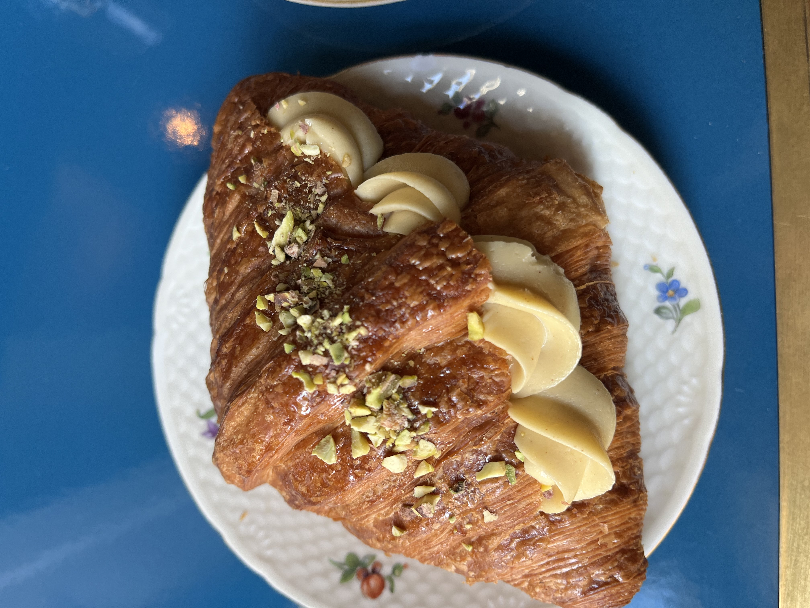
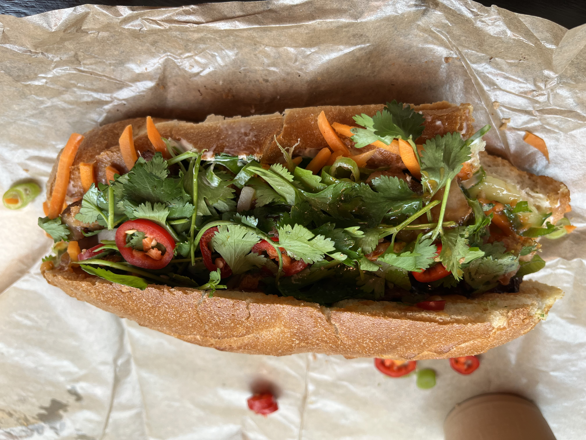

Danish hot dog. Fried onions, raw onions, remalaude, and pickles. Life changing if you're into dogs.

Part of a lovely five course meal at "Gemini" in CPH. Just pictured is the main course of Hake with champagne sauce, fennel, and broccolini.

Gochugang chicken at "Wagamama" at Tivoli Gardens. So delicious I ate it all. My friend got bolgogi beef w/ soba noodles and it was just as good tbh. Not as bad price for Tivoli as well.

One of my best finds by accident. At "Bagelicious", found in a cute part of CPH called Norrebro. The owner was so nice and explained the concept and offered me free lemon water to fill my bottle. They had a byob type bar ranging from hummus, to pesto chicken, brie, etc. I got a chili cheddar bagel that they press and filled with herb cream cheese, tandoori chicken, lto, cucumber, and their house sauce that you know I had to get. 10/10, forced me to figure out how to use word wrap for css.


The moment you (I) have been waiting for. I went to "Buka" and got their famous pistacio crossiant. I have to say it was pretty good and met my expectations. The first picture is their special of the day which was a citrusy cheeecake pastry. Both were super flakey and delicious but the special of the day may have been my favorite, despite being nearly impossible to cut into.

Big bahn mi. Sometimes I feel restaurants try to be too innovative with this staple, however this sandwich had a perfect balance of classic and modern flavors. I got the fried pork belly and it was perfectly crispy. I've been missing my dad so this was a nice reminder of home/Vietnam.